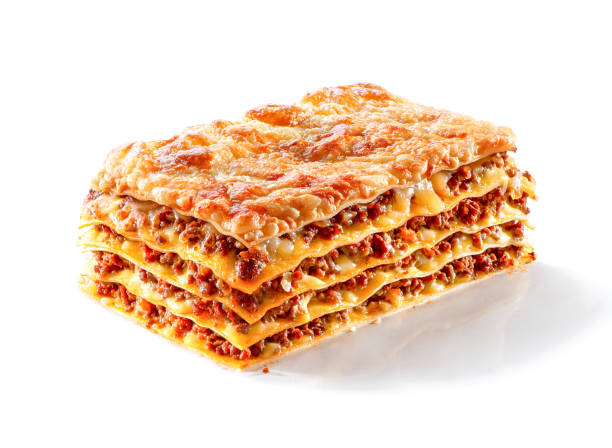

Lasagna

Description
A rich and creamy whole-wheat pasta dish filled layer by layer with refreshingly fresh onions and garlic, lathered in a succulent sauce and topped with imported, premium quality mozzarella.
Ingredients
- Lasagna noodles
- Eggs
- Ricotta Cheese
- Parmesan Cheese
- Onion
- Garlic
- Tomato Paste
- Sugar
- Italian Seasoning
- Salt
- Pepper
- Beef
- Sausage
- Chicken Broth
- Marinara Sauce
- Hot Sauce
- Worcestershire sauce
Steps
- Heat olive oil over medium heat and add the diced onions. Let them soften for 10 minutes. (This allows them to release a little sugar which is a nice offset to the acidity of the tomatoes.)
- Add the ground beef and sausage and increase heat to medium-high. Use a spatula to break up the meat so that it’s very fine and crumbled. Cook for 8-10 minutes, or until cooked through. Add garlic during the last minute. Drain excess grease.
- Add the chicken broth and use a silicone spatula to “clean” the bottom and sides of the pot. Add the marinara sauce, tomato paste, hot sauce, and Worcestershire sauce. Bring to a boil, then reduce to a simmer. Cover partially and let the sauce simmer gently while you boil the pasta noodles.
- Preheat oven to 375°
- Begin boiling a large pot of salted pasta water for the lasagna noodles. Once a rapid boil is reached, cook the noodles to al dente according to package instructions. (Set a timer to ensure you don’t overcook them.) Gently stir with a wooden spoon throughout cooking to prevent the noodles from sticking. Drain and rinse with cold water until noodles are completely cool.
- Lay the cooled noodles flat on wax or parchment paper while you begin assembling the lasagna.
- Spread 1 heaping cup of meat sauce on the bottom of a 9 x 13-inch casserole dish. Next, add 4 lasagna noodles, overlapping them if needed.
- Spread 1/3 of the ricotta cheese mixture over the noodles, followed by about 1 ½ cups of meat sauce.
- Top with 4 more lasagna noodles, 1/3 of the ricotta cheese mixture, 1 ½ cups meat sauce.
- Finish with 4 more lasagna noodles, the rest of the ricotta mixture, and the rest of the meat sauce.
- Top with 2 ½ cups of Mozzarella cheese.
- Spray foil with nonstick cooking spray and place it spray-side-down on top of the baking dish to prevent the cheese from sticking to it.
- Bake for 35 minutes. Remove cover and bake for 10 more minutes.
- Remove and garnish with fresh parsley. Let it sit for 15 minutes prior to serving to allow the layers to set. Serve with garlic bread with cheese.